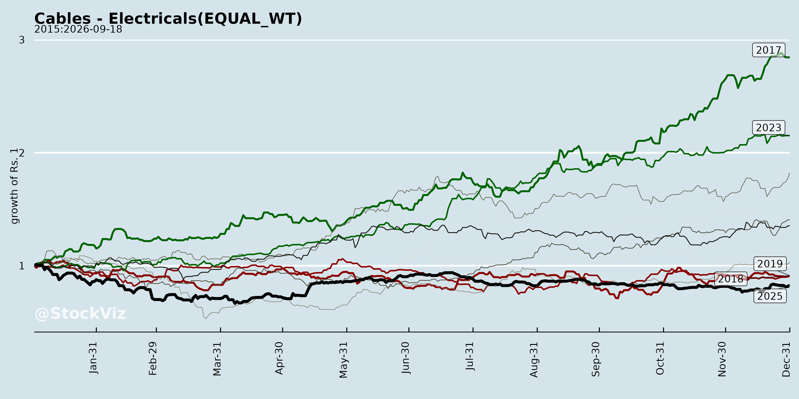
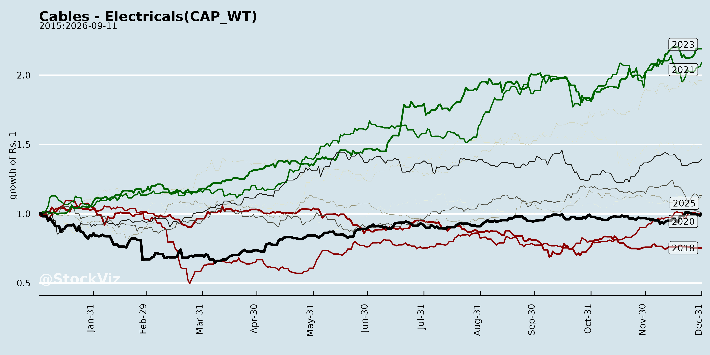
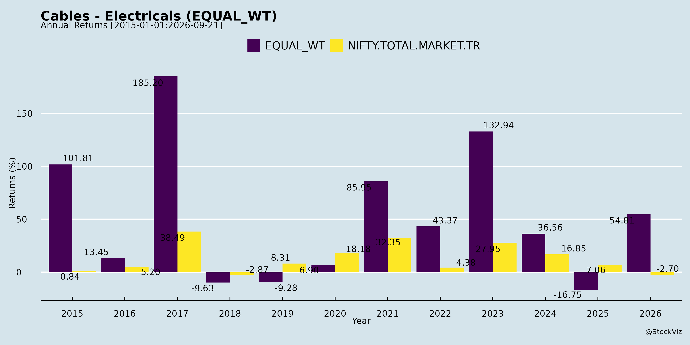
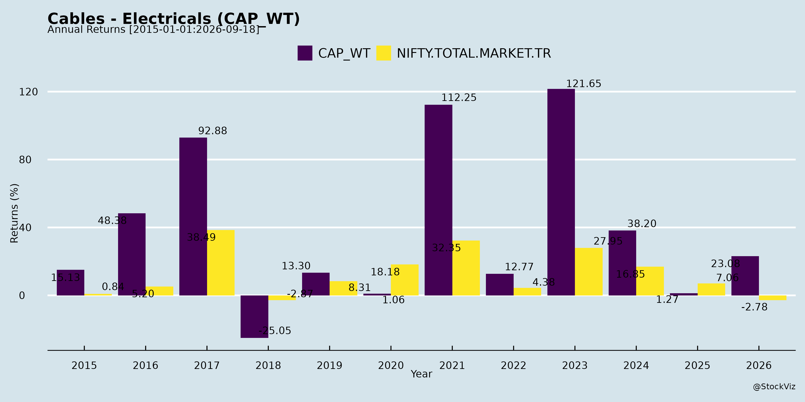
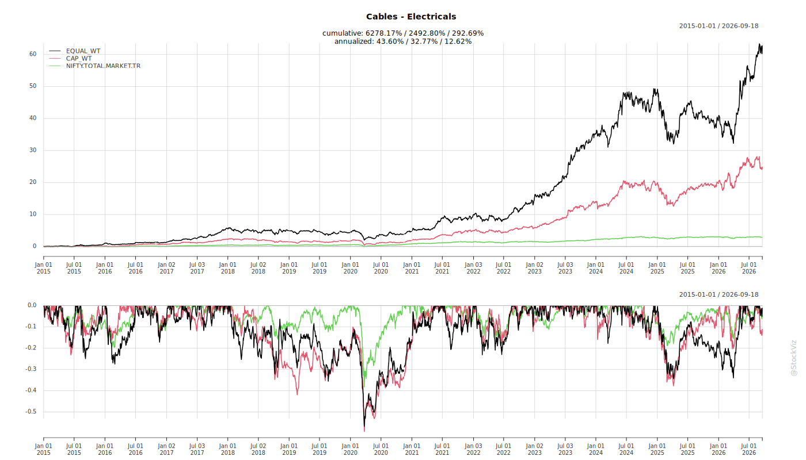
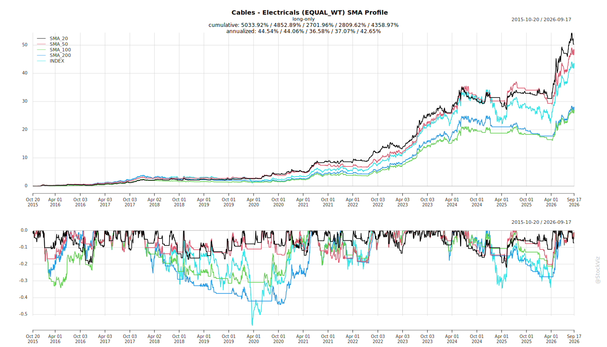
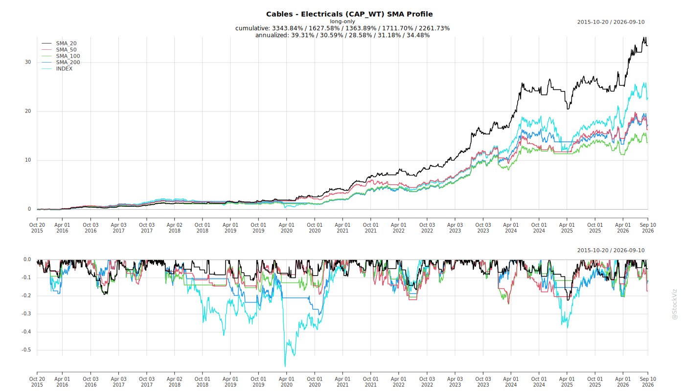
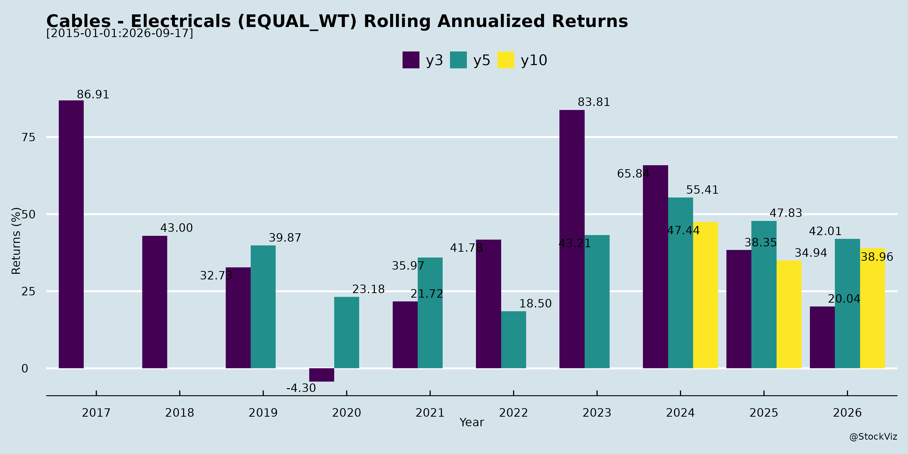
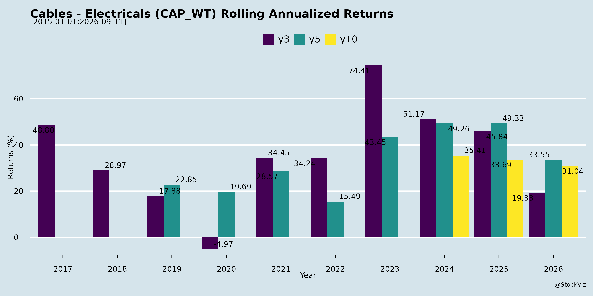

asof: 2025-11-27
Analysis of Indian Cables & Electricals Sector
The provided documents consist of regulatory filings, analyst meet intimation, earnings transcripts, and conference call details from key players like Finolex Cables, Paramount Communications, Quadrant Future Tek, R R Kabel, Dynamic Cables, KEI Industries, Polycab, and others (Q1/Q2 FY26 and FY25 results). These reveal a sector characterized by robust infrastructure-led demand but challenged by commodity volatility and competition. The analysis below categorizes headwinds, tailwinds, growth prospects, and key risks, drawn directly from management commentary, financial highlights, and strategic updates.
Tailwinds (Supportive Factors)
Headwinds (Challenges)
Growth Prospects
| Company | Q/H1 Growth Highlights | Margin/EBITDA |
|---|---|---|
| Finolex | 5% Q/9% H1 revenue; 12% wires&cables H1 | 26% Q/19% H1 EBITDA ↑ |
| Paramount | 57% Q4 revenue (FY25: 47%) | 6.6% Q4 (focus on abs. ₹) |
| R R Kabel | 19.5% Q/16.7% H1 revenue | 8.1% Q (105% YoY ↑) |
| Quadrant | 12% Q1 revenue (cables) | 8.9% EBITDA |
Key Risks
Summary
The Indian Cables & Electricals sector is poised for strong growth (13-18%+ CAGR) fueled by tailwinds like infra/renewables push, exports, and branded shift, with companies reporting 12-47% revenue surges and margin gains (7-8%+ EBITDA). Headwinds include commodity volatility, monsoon impacts, and FMEG weakness, but are being mitigated via capex/product mix. Growth prospects center on high-margin cables (HV/solar/EV), railways, and exports (30%+ targets). Key risks—commodity prices, execution delays (e.g., Kavach/BharatNet), tariffs, and competition—could cap upside if unaddressed. Overall, positive outlook for H2 FY26/FY27 with disciplined players like R R Kabel/Paramount gaining share, but vigilance on macros needed. Sector ROE targets >20% (R R Kabel) signal confidence.
asof: 2025-11-27
Summary Analysis: Indian Cables & Electricals Sector
Based on the provided announcements from key players (e.g., Paramount Communications, Quadrant Future Tek, KEI Industries, Dynamic Cables, Finolex Cables, Polycab, R R Kabel, etc.), the sector shows resilience amid infra-led demand but faces near-term pressures. Focus areas include power cables, railway signaling, renewables, EVs, and defense. Below is a structured analysis of headwinds, tailwinds, growth prospects, and key risks.
Tailwinds (Positive Drivers)
Headwinds (Challenges)
Growth Prospects
| Metric | Q2/H1 FY26 Highlights (Select Cos.) |
|---|---|
| Revenue Growth | Paramount +20% YoY Q2; Quadrant +20% QoQ |
| Order Book | Strong (₹500 Cr+ across players) |
| EBITDA Margins | 5-9% (pressure from costs) |
Key Risks
Overall Sector Outlook: Positive long-term (infra/RE tailwinds outweigh headwinds), but near-term cautious (margins to stabilize post-tariff adjustments). Focus on premium/specialty products (e.g., e-beam cables, KAVACH) for 15-25% growth. Monitor US trade dynamics and Q3 earnings for clarity.
asof: 2025-11-27
Summary Analysis: Indian Cables & Electricals Sector
The Indian Cables & Electricals sector, as reflected in recent Q1/Q2 FY26 earnings transcripts, analyst meets, and disclosures from key players (Finolex Cables, Paramount Communications, Quadrant Future Tek, R R Kabel, etc.), demonstrates robust underlying demand driven by infrastructure and electrification themes. Companies reported revenue growth of 5-47% YoY (modest to strong), with EBITDA/PAT surges (19-134% YoY) due to operational leverage. Wires & cables remain the core growth engine (70-90% of revenue for most), while FMEG lags. Industry poised for 13-14% growth (2x GDP), with players targeting 18-30% CAGR via capex. However, commodity volatility and competition temper optimism.
Tailwinds
Headwinds
Growth Prospects
| Company Snapshot | Q/H1 FY26 Revenue Growth (YoY) | EBITDA Margin | Key Growth Driver |
|---|---|---|---|
| Finolex | 5% Q / 9% H1 | ~10-12% | Industrial/solar cables |
| Paramount | 57% Q4 FY25 | 6.6% | Exports (31%), power cables |
| Quadrant | 12% Q1 | 8.9% | Kavach (post-approval) |
| R R Kabel | 19.5% Q / 16.7% H1 | 8.1% | Wires (16% vol.), cables |
Key Risks
Overall Outlook: Bullish medium-term (infra-led supercycle), but Q3/Q4 FY26 hinges on commodity stability and H2 demand. Sector ROIC improving; focus on branded players with capex/debt discipline for outperformance. Investors should monitor export tariffs and Kavach execution.
asof: 2025-11-27
Indian Cables & Electricals Sector Analysis (Based on Q2/H1 FY26 Results of Dynamic Cables, Polycab, and RR Kabel)
The sector demonstrates robust momentum, with all three companies reporting strong YoY revenue growth (17-23%), margin expansion, and healthy profitability. Core Wires & Cables (W&C) business is the primary growth driver, fueled by power infrastructure demand. Below is a structured analysis of tailwinds, headwinds, growth prospects, and key risks.
Tailwinds (Positive Drivers)
Headwinds (Challenges)
Growth Prospects
Key Risks
Summary
| Aspect | Key Metrics (H1 FY26 Aggregate Trends) | Outlook |
|---|---|---|
| Revenue Growth | 17-23% YoY across firms | Strong (15-20% FY26E) on infra tailwinds |
| EBITDA Margins | 7-15% (expansion 100-300 bps) | Stable/improving on leverage |
| PAT Growth | 50-81% YoY | High-teens sustainable |
| Net Debt/Cash | Mostly net cash/ low debt | Healthy balance sheets |
Overall Sector Outlook: Bullish. Leaders like Polycab (scale), RR Kabel (exports), and Dynamic (mid-cap growth) reflect a resilient sector powered by India’s power infra push. Tailwinds dominate, but monitor FMEG seasonality and commodities. Risks are manageable with strong visibility; forward P/E multiples could expand on sustained execution.
Copyright © 2023 SAS Data Analytics Pvt. Ltd. All rights reserved.